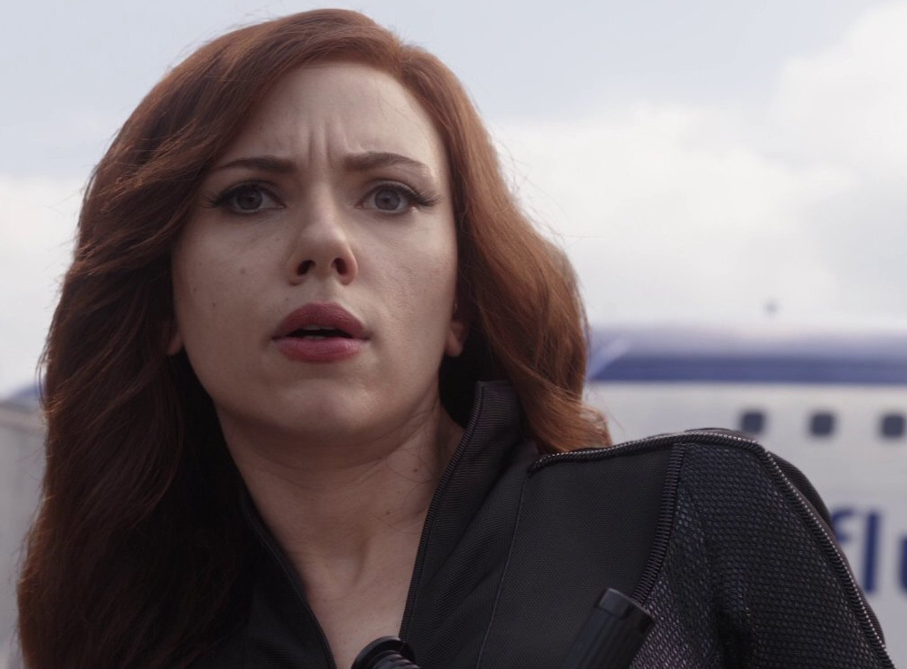

About Black Widow
Black widow is amazing and she is an assassin in Marvel. Unfortunately she is dead :(. She died getting the soul stone to defeat Thanos.
Black Widow just in general
Facts about Black Widow
- She has red hair
- She is bad-ass
- She is Russian and was in the Red Room before coming to work for Shield
Black Widows friends
Black widow's friends are ones who she works with. These include iron man, Captain America and many more Click on links below to read more about her work and friend groups